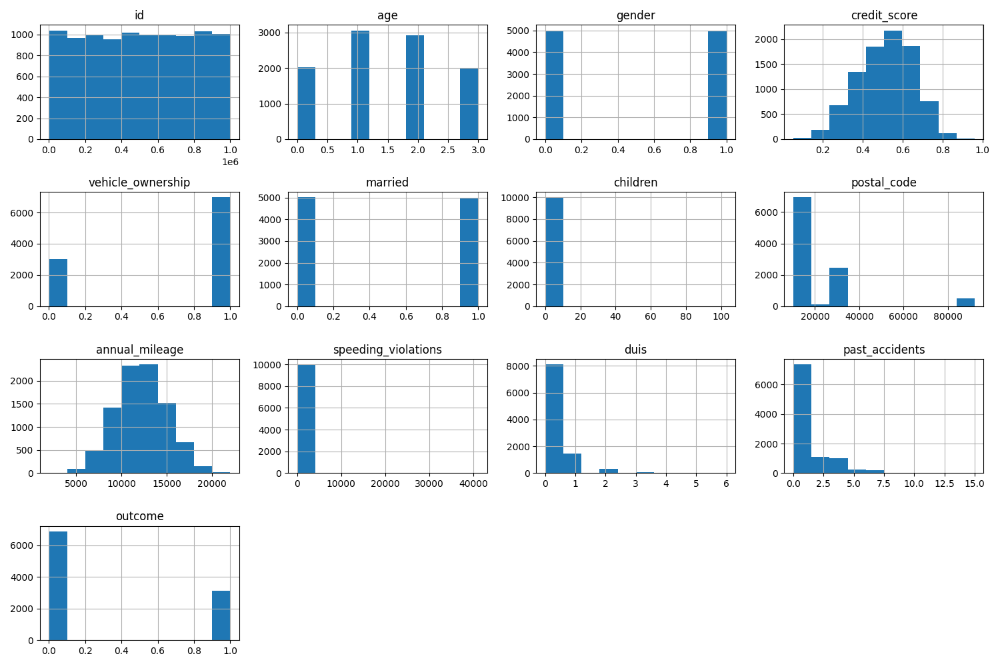
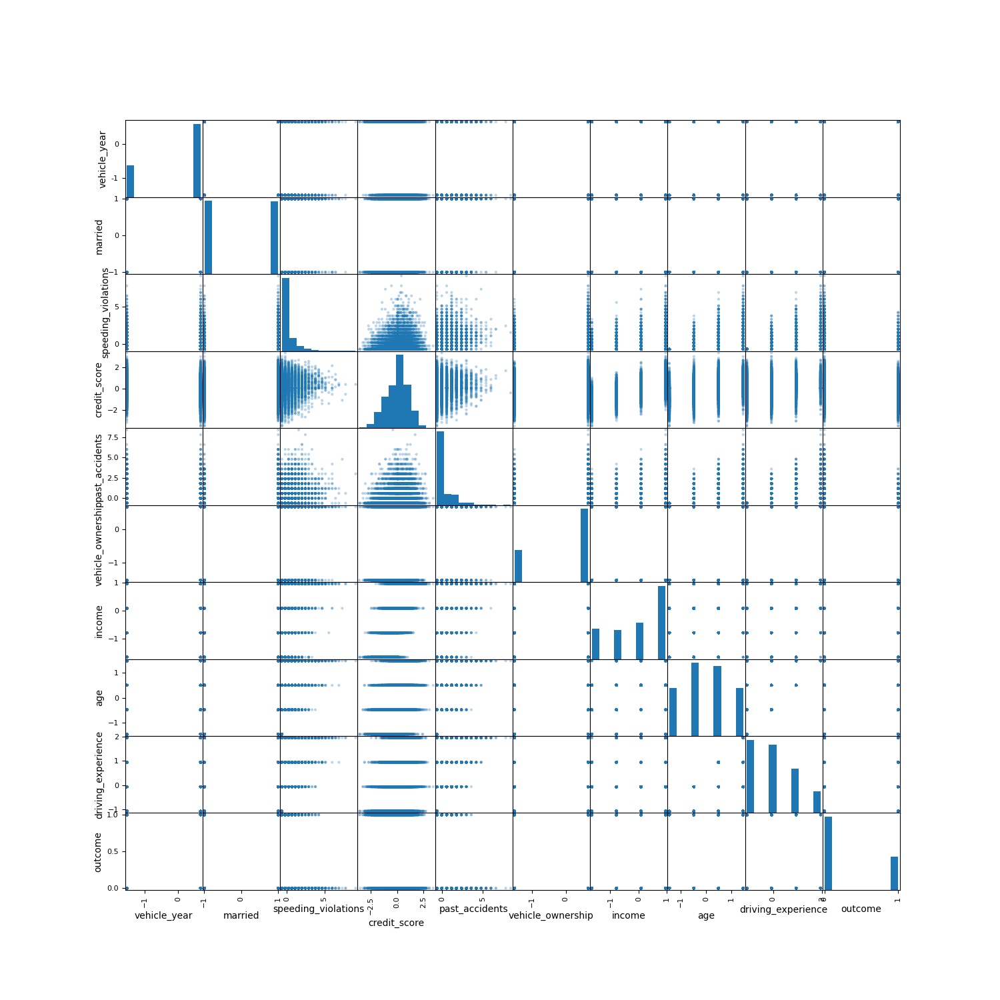
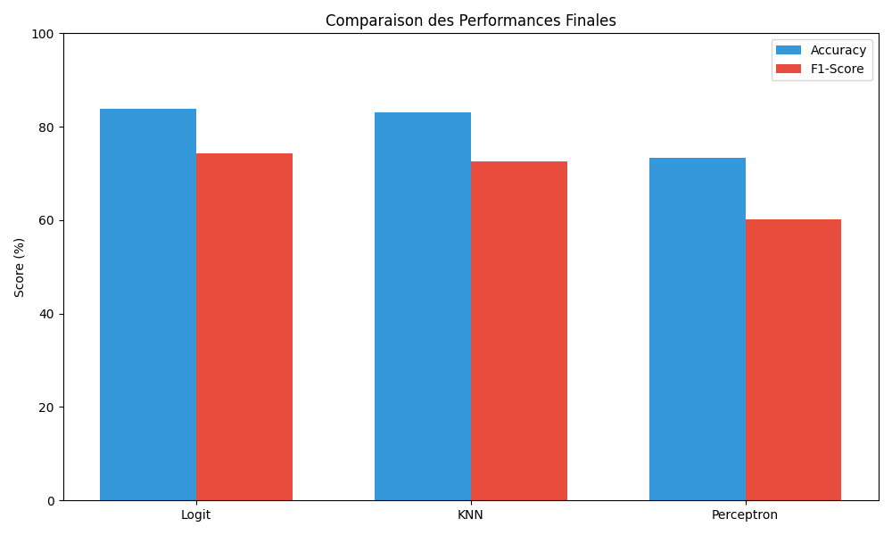

Objectif : predire la probabilite qu un client declare un sinistre a partir de 10 000 profils et 18 variables.
Presentation autoportee : chaque slide rappelle le contexte, les choix de donnees, et l interpretation des resultats.
Le projet suit un pipeline complet : exploration, nettoyage, encodage, mise a l echelle, apprentissage, evaluation.
Jeu de donnees : 10 000 clients, 18 variables (socio-eco, conduite, vehicule).
Variable cible : outcome (1 = sinistre, 0 = aucun)
Livrables : graphiques, comparaison modeles, modele final sauvegarde.
Cadre : preparation, correlations, benchmark multi-modeles.
Objectif metier : mieux identifier les profils a risque pour aider la decision.
Chaque partie contient le rationnel des decisions et la lecture des resultats pour une comprehension sans oral.
Les sections sont structurees comme un mini rapport : contexte, methodes, preuves visuelles, puis choix final.
L objectif est de rendre les donnees coherentes, comparables et exploitables par des modeles statistiques.
Les valeurs aberrantes peuvent dominer les moyennes et rendre les distances non representantives.
La mediane conserve une tendance centrale stable, meme en presence d extremes.
Les variables ordinales gardent un sens de progression utile pour le modele.
Sans mise a l echelle, les variables a grandes valeurs dominent l apprentissage.
Resultat : un jeu propre, numerique, et pret pour la modelisation et la comparaison multi-modeles.
Les graphiques valident la qualite des features et orientent les choix de variables.

Lecture : certaines distributions sont etalees ou asymetriques, d ou la normalisation.
On repere aussi des pics possibles lies aux imputations medianes.

Lecture : separation partielle, pas de frontiere nette, utile pour un modele probabiliste.
Les nuages se chevauchent, ce qui justifie un modele qui renvoie des probabilites.
Ces graphiques servent a verifier la qualite des variables et a orienter la selection des features.
Une correlation negative indique qu une variable plus elevee est associee a moins de sinistres. Ce n est pas une causalite, mais un bon signal de priorisation.
driving_experience : facteur protecteur principal.
age : sinistralite plus faible chez les plus ages.
income : plus de revenus, moins de sinistres.
La correlation sert de filtre initial, puis le modele valide les variables utiles.
Trois familles complementaires : lineaire interpretable, voisinage, et perceptron pour tester une frontiere lineaire simple.
GridSearchCV teste plusieurs valeurs pour chaque modele afin d etre equitable.
La validation croisee limite l effet du hasard sur le choix du modele.

Lecture : la regression logistique reste la meilleure, KNN proche, perceptron en retrait.
Dans un probleme de sinistre, une seule metrique ne suffit pas. Nous observons l equilibre entre detection et precision.
Part des predictions correctes sur l ensemble des clients. Utile, mais sensible au desequilibre des classes.
Parmi les clients predits a risque, quelle proportion est vraiment en sinistre. Limite les fausses alertes.
Parmi les clients en sinistre, quelle proportion est bien detectee. Minimise les sinistres rates.
Moyenne harmonique precision/recall. Resume le compromis global dans un seul indicateur.
Accuracy test
F1-score
Solver liblinear
Le F1-score autour de 74% indique un bon compromis entre detection des sinistres et limitation des fausses alertes.
Le modele reste interpretable : chaque coefficient indique une influence directionnelle sur le risque.
La matrice explique les erreurs du modele et leur impact metier.
Les faux negatifs representent des sinistres manques, a surveiller selon le risque metier.
Le seuil de decision pourrait etre ajuste si l on souhaite plus de rappel.
Logistic Regression optimisee pour une decision claire et interpretable.
Le modele se comprend facilement et peut etre explique aux equipes metier.
Il offre un bon compromis performance / transparence.